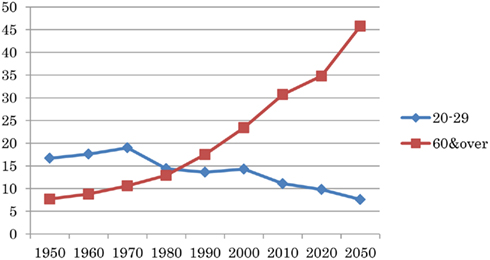

As hikikomori hardly interact with society, they are highly dependent on others for their survival. For this reason, they become a financial burden to their families.


The chart above depicts the increasing age gap in Japan between the young and old.
As hikikomori age, so do their caretakers. Eventually, there will be no one left to provide the hikikomori support, and they will be at a fairly old age themselves. When that time comes, it will be even more difficult for them to change their lifestyle.